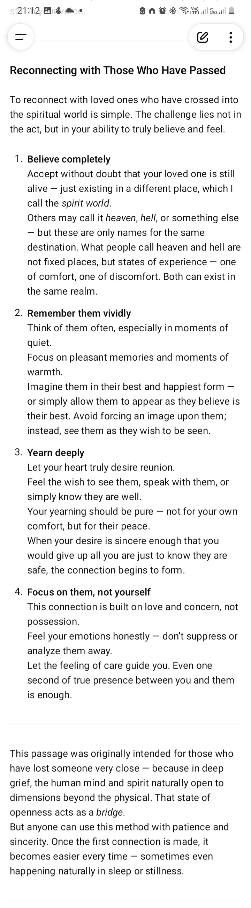
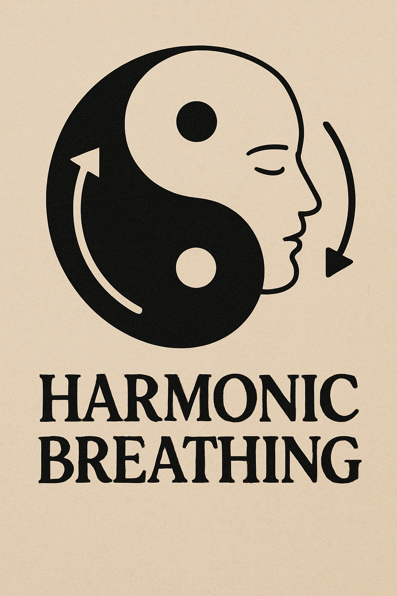

<Methods> in here should work for <everyone> irrespective of belief and background well atleast to some extend.
I suggest you start with <open mind> dont overthink <just do>, <forget> things en experience en <just do> like its all you have for now.
If you are stuck maybe check [ Ancient ] for <deeper clarification> regarding the method, provided u wont be deeply confused then quit instead of trying until u can make sense of what said then <try few more times> to ensure you are <not miss-interpriting> which is even more <worse and bad> like really bad.
Basically if you fail is <not that> the <methods> are <not working> but <u> either <missing something> or something in <you> is <interfering> like a <belief, expectation, experience> some other i dont know, just <seek> input of <others> for <clarification> you will eventually realise something from listening to others narrating their experience, keep in mind <its their experience not yours> listen <dont adopt> get inspiration to create yours.
Methods as Tools to use to achieve specific <goals> striped down to <bare essence.>

Life continues.
It always en always will be, if anything conciousness is what changes by expanding en retracting.
This is shortcut to reconnect with loved ones, this shortcut is more of an extract to longer path of this which can take years or even longer or shorter.
If you have trouble look in text [ Ancient ] as it should have more requirements or extra inspiration, after all this is a shortcut that deeply lay on emotional intensity of the connection between parties involved, also its not that the shortcut don't work because emotions are not enough but that the internal or external interfere is too much or too strong to overwhelm effect of emotion this technique is enchoring on as such I recommend looking though text in [ANCIENT] for anything to use especially those about belief/experince/expectation management or something like that.
Reconnecting with Those Who Have Passed
To reconnect with loved ones who have crossed into the spiritual world is simple. The challenge lies not in the act, but in your ability to truly believe and feel.
1. Believe completely
Accept without doubt that your loved one is still alive — just existing in a different place, which I call the spirit world.
Others may call it heaven, hell, or something else — but these are only names for the same destination. What people call heaven and hell are not fixed places, but states of experience — one of comfort, one of discomfort. Both can exist in the same realm.
2. Remember them vividly
Think of them often, especially in moments of quiet.
Focus on pleasant memories and moments of warmth.
Imagine them in their best and happiest form — or simply allow them to appear as they believe is their best. Avoid forcing an image upon them; instead, see them as they wish to be seen.
3. Yearn deeply
Let your heart truly desire reunion.
Feel the wish to see them, speak with them, or simply know they are well.
Your yearning should be pure — not for your own comfort, but for their peace.
...Attached FILE
Files:
10/15/2025, 9:26:43 PM

This breathing technique came about to normalize energy in a body, keep in mind everything is energy or energy related to some extent this includes ailments, sure science would say bacteria en viruses are tiny organisms, that's alright just remember the organisms runs on energy of whatever kind.
Your body should have unrestricted flow of energy so much u dont notice any blockage but soothing cool flow of energy when u look or sense through ur body using feeling, normally I needed this technique to deal with energy residue that came by my use of "will en intent" in my everyday life, but surprisingly lately I also observered it has health effect on ailment when used with intention to cure or better it then again i have yet to test it effectiveness on actual healing. At some point i will include healing methods but at top of my head I can only remember that they are more about healing another while this method can be though of as about healing oneself directly. Sure I imagine this methods can be used by one who heal en is being healed at same time for those who can group, basically no restriction only how much you can preserve and improve en adopt when necessary en u understand what u doing.
You will have to read the attachment or go to link below en chat or ask for clarification if it still works.
https://chatgpt.com/share/b242e5eb-1990-40ed-bb45-326c2a925fe3
10/5/2025, 6:17:03 PM
Direct/Short-cut is a method or technique that allows one to bypass unnecessary steps or processes in order to achieve a specific goal or outcome more efficiently. It is often used in various fields such as technology, business, and personal development to streamline workflows and improve productivity. And now to be used in spiritual practices to achieve enlightenment or self-realization more quickly Hahaha.